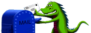

Mozilla メール／ニュース
イントロダクション
Mozilla メール／ニュースへようこそ。このページには、Mozilla ブラウザのために記述されているメール／ニュース クライアントに関する情報が載っています。 もしあなたが今回初めて Mozilla プロジェクトについて学ぶのなら、簡単な 歴史や、他の Mozilla プロジェクトとの関係 をご覧になることをお勧めします。
技術
プロジェクトのドキュメンテーション
- メールのユーザインターフェイス仕様
- ステータスレポート ［2000/11 - 2001/07］
- 4.x プロファイルデータの 5.0 への移行
- 公開プレゼンテーションスライド
- ミーティング
- エンドユーザ FAQ
関連プロジェクト
品質保証
- メール／ニュース 品質保証ページ
- 品質保証スモークテスト - POP、IMAP、ニュースのために実施された簡単なテストセットです。
- ニュースのテスト
参加するには
- ソースコード - メールクライアントのソースコードは mozilla/mailnews ディレクトリにあります。
- 仕事 - どうやって協力できるか考えていますか？ 未解決のバグや実現されていない機能がたくさんあります！
- メール／ニュース ニュースグループ は、提案を出したり質問をしたりするのにおそらく最も適したところです。 また、メーリングリストとしてこのニュースグループを購読することもできます。詳しくは コミュニティのページ をチェックしてください。